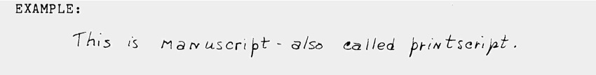
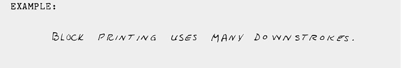
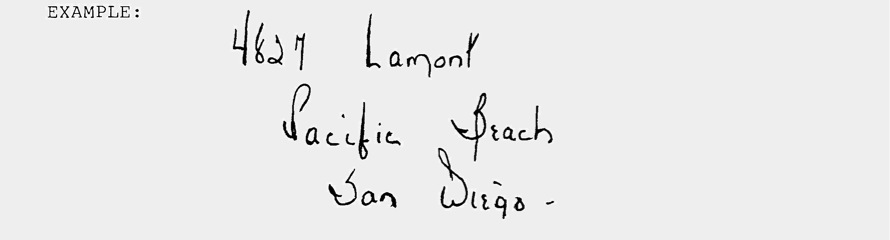
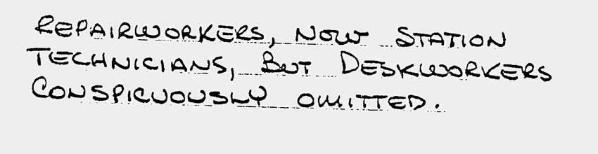
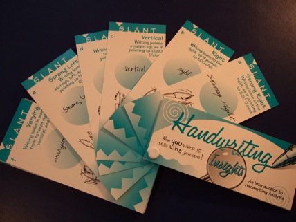
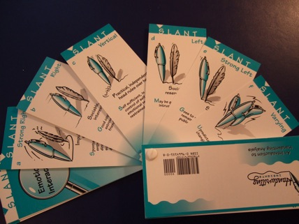

In using the Handwriting Insights deck people have requested further information on Printing. This information is from Handwriting Fundamentals, a course written by Paula Sassi and Eldene Whiting, and is included here with their permission.
In the last fifty years printing has become an accepted form of written communication. To an analyst this poses a perplexing problem because the use of mechanical printing puts a mask over personality which hides the emotional feelings of the writer. Printing uses a majority of strokes which are downstrokes. Cursive writing combines both upstrokes of conscious upslant and unconscious downslant. So printing tends to disguise the feelings and make them a product of unconscious motivation rather than of conscious will. The writer who prints exclusively (except for perhaps his signature) often is hiding his true nature, possibly even from himself.
INTERPRETATION OF PRINTING
What most people refer to as printing sometimes is really a combination of both printing and cursive script. This combination sometimes indicates ingenuity and good problem solving abilities on the part of the writer. The analyst needs to recognize what printing or cursive writing is used and also the picture values within the sample before making this evaluation.
The writer who prints is basically one who is a constructive and practical thinker who relates to the mechanics and material/ tangible aspects of life. Printing provides a cover up for his true feelings. Harmonious printing indicates a person who thinks in a building block fashion. He is able to take many small details and combine them into a coordinated whole. He possesses self control and good organizational abilities. Inharmonious printing indicates a person who is fragmented in his thinking and has difficulty relating to others. He can be sharp and unfeeling in social interactions.
VARIATIONS OF PRINTING
MANUSCRIPT (also called PRINTSCRIPT) is the "copybook" style of printing, used normally in newspapers and books. It uses all three zones and can be analyzed with the same general rules that apply to cursive writing. Although the letters may be disconnected, there is a fluid movement from letter to letter that contributes to its score for connectedness which is covered in the last part of this lesson. This easy movement from letter to letter is in contrast to block printing (see below) and gives the printer an opportunity to exhibit personal originality and still remain legible.
Interpretation of a pure printscript form shows the conservative, conventional personality. This writer is geared more toward logic, mechanics and material "things" than toward people. People who print legibly are usually intelligent and objective.

BLOCK PRINTING uses downstrokes almost exclusively. This style insures legibility and clarity of form. However, there are no lower zone strokes to measure which poses a problem to the analyst. To discover relative zonal size, check the letters A and H (and others) and measure the distance from the crossbar to the baseline- to determine middle zone size. The distance from the cross bar to the top of the letter will give you a good idea of upper zone extension, but you will have to "guesstimate" what the lower zone might be from your experience with cursive writing and its zonal balance. This comes with practice.
The block printer is one who sees structure in everything around him. Often the adult who block prints is required to do so by his career as a draftsperson, a builder, an architect, computer worker, etc. He is a literal person and must see an object work or handle it before he thoroughly understands its function. He prefers to work with his hands.
His feelings are usually masked and may be deep and basic. It may be difficult for him to express himself verbally. By printing, he uses a facade to protect his emotional nature.

ARTISTIC PRINTING is a combination of printed and cursive letters. Picture value is reflected in curved, flowing flourishes and original letter forms which give an artistic, pleasing picture to the eye. There may be exaggerations of line values throughout adding to the creative artistry. occasionally it is possible to recognize what form of art this printer expresses by the color (shading and pressure), musical forms or sculptured structure of the letters.
An artistic printer has strong emotional expressiveness, but may not show this by his actions. Instead he expresses his versatility through his creative work. The printing is the protective facade of his personal emotions. The shading and pressure (color) are the artistic uniqueness.

BUSINESS PRINTING is usually block printing or a structured style of manuscript. It has less flow and less picture value because the emphasis is on legibility for the purpose of clarity in the business. As a non-emotional style of communication, it is becoming more universal as society becomes more geared to machines.

*******************************************
Experience the thrill of analyzing handwriting! Entertain
family and friends by showing them what their handwriting
reveals.
Handwriting
Insights is a high quality deck of 64 connected,
illustrated cards that teaches you handwriting analysis as
you use it. Analyze handwriting in 5 minutes. Results are
worded constructively so people feel good about what you
have to say.

We
are closing out our inventory. While supplies last you can
order your kit
Book Clearing House
for only $10.95.
Or, if you prefer to order over the telephone you can call
Book Clearing House
In the United States, dial toll-free: (800)
431-1579.
International
customers, please call: (914) 835-0015.